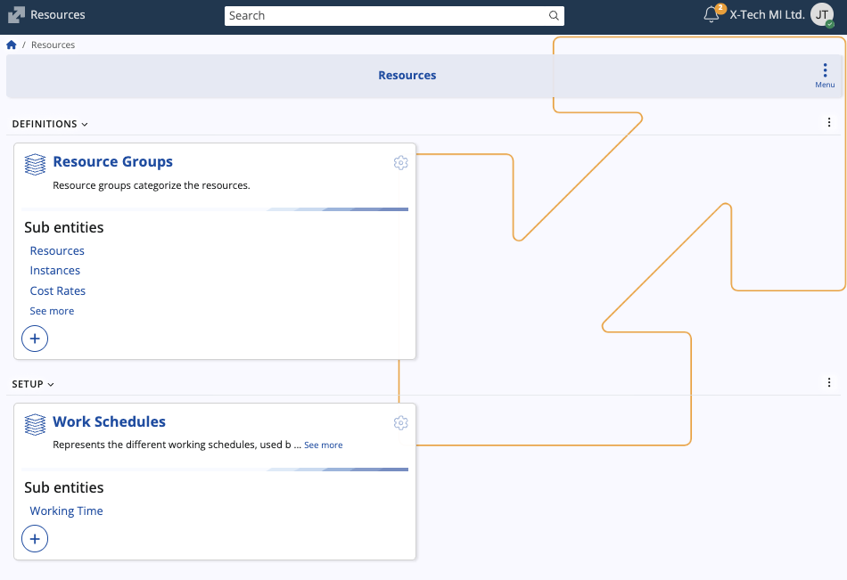

Resources
The Resources section in ERP.net supports the definition and management of physical and non-physical assets (such as machinery, tools, labour, and equipment) and their operational parameters.
This foundational data enables other modules like Production to reference, schedule, cost and track resource usage.

Structure
The module is structured around two main panels, each with related sub-entities:
| Panel | Purpose | Sub-entities |
|---|---|---|
| Resource Groups | Categorises resources into logical groups for organisation, costing, and scheduling. | • Resources (individual items) • Instances (multiple units of a resource) • Cost Rates (standard/overtime/per-use costs with validity) • Availability (date ranges with available quantity) |
| Work Schedules | Defines working time profiles used to describe when resources work. | • Working Time (day number with start/end times) |
Purpose and relationships
Resource Groups serve as the top-level container for resources. Organisations typically create a group (e.g., “Maintenance Staff”, “Production Machines”) and then assign individual resources to these groups for management, costing, and scheduling.

Resources represent the actual asset or capability (for instance “CNC Machine #12”, “Technician A”). They reference a Resource Group, may have notes and define a costing currency.

Resource Instances allow organisations to manage multiple units of a resource type (for example, multiple “Technician A” instances or “Forklift Model X – Unit #001”) and map to parties or assets.
Cost Rates capture the cost attributes of resources over time (for example, standard hourly rate, overtime rate, per-use cost); linked to enterprise company context and validity dates.
Work Schedules define when resources are available or scheduled for work.
Working Times list day numbers and start/end times (e.g., DayNo = 1 (Monday) StartTime = 08:00, EndTime = 17:00).
Important
Creating new sub-entities is done by first selecting Edit, then Create new.

Note
The screenshots taken for this article are from v.26 of the platform.